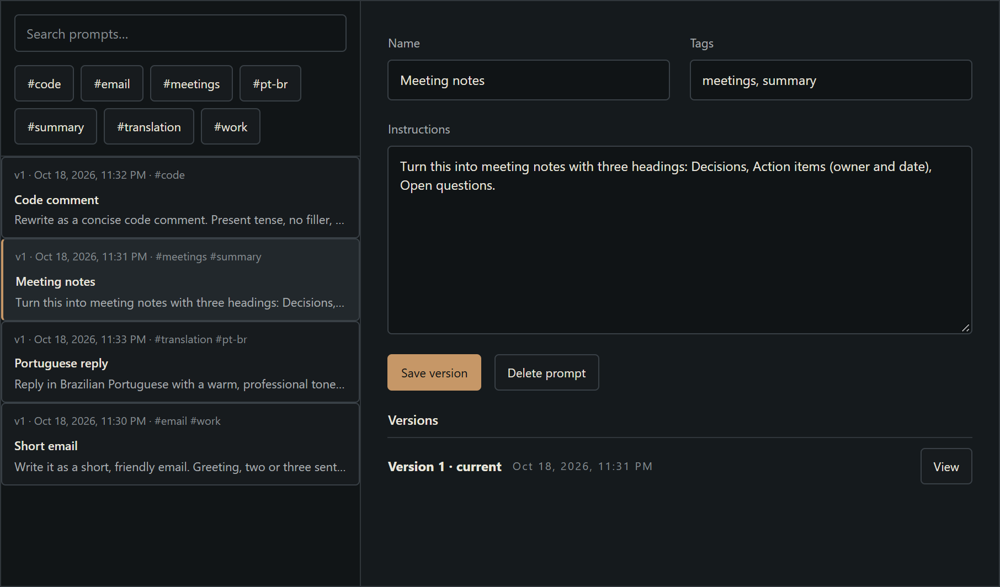

Prompts library
Write an instruction once. Use it everywhere.
1
Tags
keep prompts findable.
2
Every save is a version
you can restore.
3
Type @
in formatting, profiles, the meeting assistant or Actions.

1
2
3